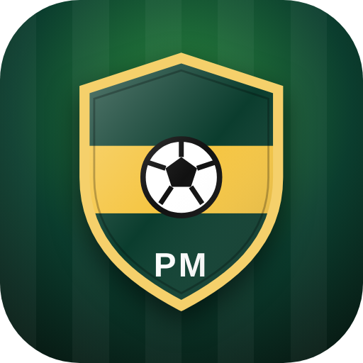
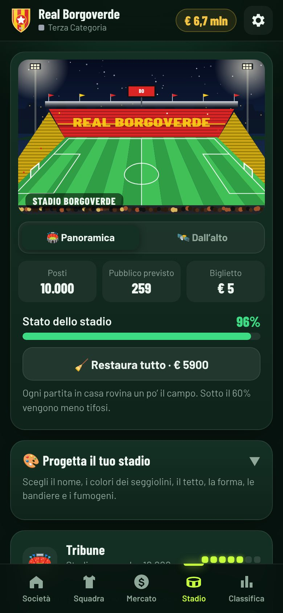
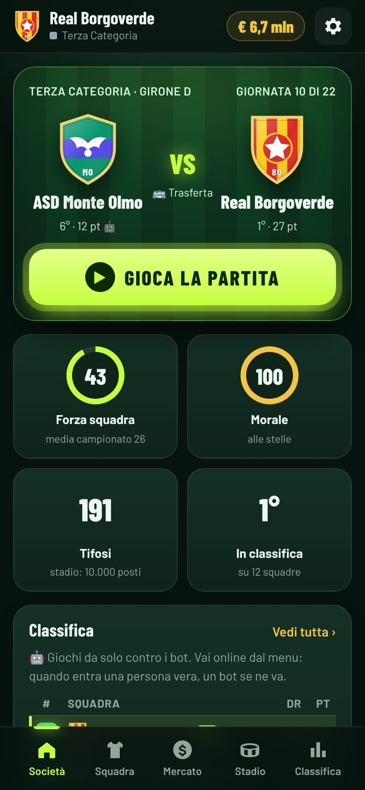
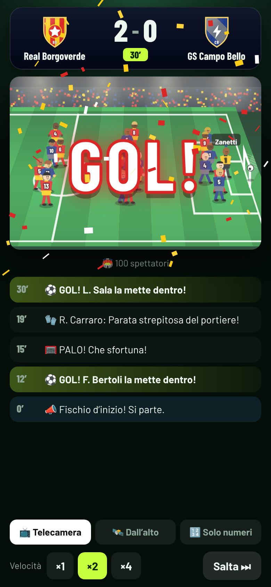
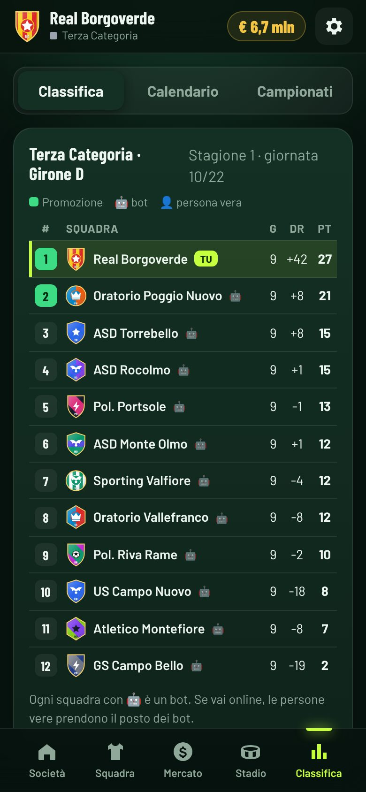
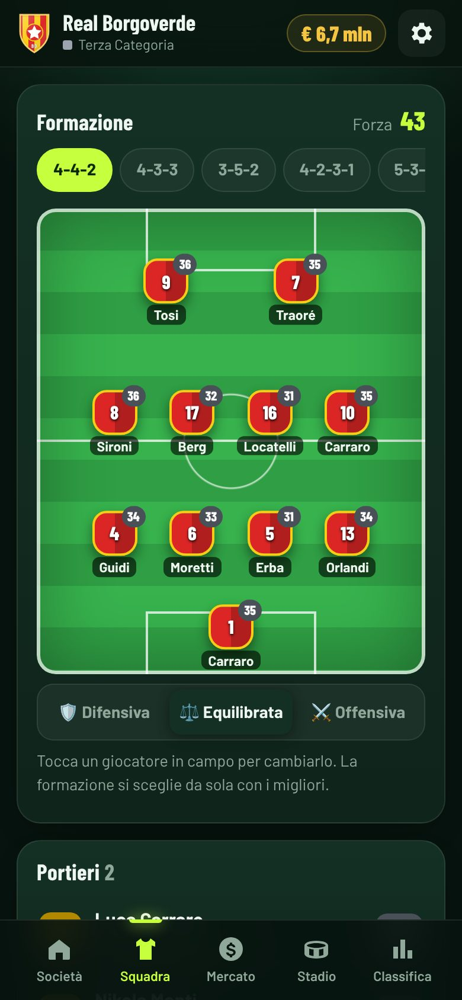

Fonda la tua società di calcio con 2.500.000 €. Partite in diretta, mercato con trattative, staff, stadio e giovanili.
Comincia in Terza Categoria e portala fino alla Serie A.



Ogni scelta è tua: chi comprare, chi far giocare, come spendere i soldi.
Nome, città, colori e stemma: forma, disegno e simbolo li scegli tu.
Portieri, difensori, centrocampisti e attaccanti, ognuno con bravura, età, stipendio e talento.
Allenatore, vice, preparatore atletico, preparatore dei portieri, medico, osservatore e direttore sportivo.
Dalla rete intorno al campo allo stadio leggendario da 80.000 posti. Erba, luci, negozio, maxischermo e restauri.
Guardi la partita sul campo con la telecronaca, i tiri, le parate e l’esplosione del GOL.
Biglietti, sponsor, TV e premi da una parte; stipendi e manutenzione dall’altra. Non andare in rosso!
Lautaro, Barella, Maignan, Leão, Vicario, Maldini e tanti altri campioni da comprare al mercato.
Telecamera come in TV con i giocatori che corrono, vista dall’alto, oppure solo i numeri.
Principiante, Normale, Medio, Forte ed Estremo: scegli tu quanto è dura.
Nome, colori dei seggiolini e del tetto, forma ovale, bandiere, fumogeni e partite di sera.
Con il centro giovanile ogni anno arrivano ragazzi che possono diventare campioni.
Ogni campionato vinto finisce in bacheca, insieme alla storia della tua società.
In ogni girone ci sono 12 squadre. I primi due salgono di categoria, gli ultimi due scendono. Nove campionati per arrivare in cima.


All’inizio nel tuo girone ci sei solo tu: le altre squadre sono bot. Quando entra nel girone una persona vera, un bot se ne va e lei prende il suo posto, con i suoi punti.
Quando nel girone ci sono più persone, la giornata si gioca appena siete tutti pronti, o al massimo dopo mezz’ora.
E in Serie A? Quando i bot sono finiti e sono tutte persone vere, la classifica si allunga per far posto a tutti.
Lo stesso account del Gioco della Vita PM La società si salva online
Apri passilombardi.github.io/calciomania/app con il telefono.
Android: tocca i tre puntini in alto e poi «Installa app». iPhone: tocca il quadrato con la freccia e poi «Aggiungi alla schermata Home».
Ora Calciomania PM si apre come una vera app, a schermo intero. Si aggiorna da sola.
2.500.000 € ti aspettano. Il resto dipende da te.
⚽ FONDA LA TUA SOCIETÀ